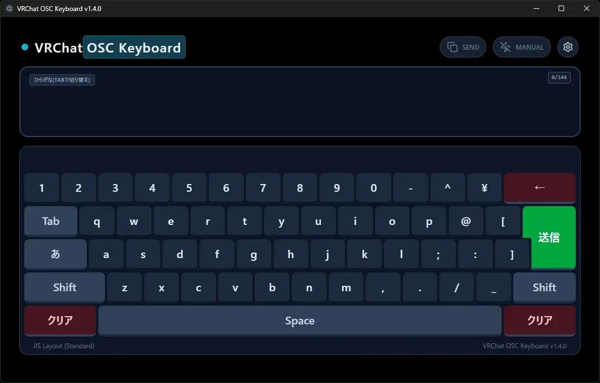

⚠️サイトに関する注意⚠️
このサイトはVRChatを普段プレイしない人が作ってます。
ツールを作ってる別の人は普段からVRChatをプレイしてます。
⚠️ツールに関する注意⚠️
「一般VRChatterが、AntigravityやCodexを使って適当に作った実験的なツールです。
このソフトの使用によって発生したトラブルについては、自己責任でお願いします。」
by ツール作ってる人
はじめに知ってほしいこと、伝えたいこと
VRChat OSC Keyboardとは何なのか
VRChatというソーシャルVRプラットフォームで、チャット入力を快適にするためのツールです。
VRChatはVRモードでのチャットの入力が不便ですが、このツールはVRChatのOSC機能を利用して、物理キーボード入力・変換ができる快適なテキストチャットを可能にします。
このツールの大きな機能・特徴
モダンなデザインとアニメーション。
好みに合わせて選べる、3種類のテーマ。 (ライト、ダーク、ピュアブラックモード)
アクセントカラーを、カラーホイールで変更できます。
Electronで構築された、オープンソースソフトウェアです。
内蔵キーボード(かな・カナ・英)＆物理キーボードで、入力ができます。
物理キーボード入力時は、変換(IME)が使えます。
書きかけのセクション
README
その他の機能と特徴
- ツール内の文字数制限機能が入力文字を、VRChatの最大文字数以下に制限します
- 自動更新機能で新しいバージョンが、簡単にインストールできます
- 自動送信機能
- 設定リセット
- SteamVRにネイティブ表示できます
- ツールに入力した文字を、クリップボードにコピーできます
すべての機能、特徴を記載することはできません。是非、試用してみましょう。